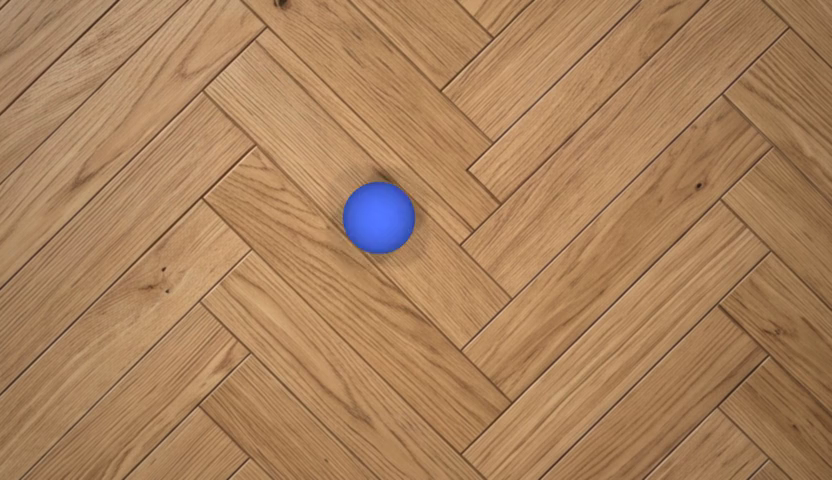

Does Physics Live in the Activations?
Localizing Physical Quantities in Video Diffusion Models
Under review · ICLR 2027Abstract
Video generation models produce strikingly realistic sequences and are increasingly proposed as world models, yet recent benchmarks reveal pronounced deficits in their physical reasoning. This raises the question of whether these models internalize physical principles or merely reproduce familiar motion patterns.
We address this by probing internal representations of video DiTs for simulator-derived ground-truth physical quantities spanning kinematic motion and rigid-body dynamics under gravity and contact. We find that these quantities are linearly decodable with high accuracy early in the denoising process, substantially outperforming a baseline decoded directly from the model's own noised latents. This indicates that the relevant physical information is actively constructed during denoising, rather than already present in the input.
Additionally, we show that activations at on-object tokens carry the relevant physical information and that quantities defined over multiple frames are readable from single latent-frames. Hence, information is sharply localized within the token sequence and is computed globally but stored locally. The probes further show partial extrapolation, transferring unchanged to scene variations and object configurations they were never fit on. When fitted directly in the raw activation space, the probing directions can serve as steering vectors to change the model's output.
Key Findings
Decodable
Speed, direction, momentum and gravity are linearly decodable from the residual stream of Wan 2.1, CogVideoX 1.5 and Open-Sora 2.0, early in denoising.
Stored locally
A disk covering 1–2% of the tokens around the object beats a readout over the whole sequence. Multi-frame quantities are readable from a single token-frame.
Causally active
Probe directions transfer across scene changes, and when injected back they flip the generated rolling direction.
Controlled Scenarios with Exact Ground Truth
We render about 200 videos per scenario with the Genesis simulator, so every clip comes with exact physical labels. Each video is encoded, forward-diffused to a chosen noise level, and passed once through a frozen DiT while we record every layer's activations.
Probing: Computed Globally, Stored Locally
Ridge probes predict each simulator quantity across layers, noise levels and token subsets. The comparison against a probe fit on the noised latent separates information already in the input from information the transformer builds. Attention spans the whole clip, yet the physical signal concentrates on the object's own tokens: a small disk-shaped region of interest around the object beats a readout over the whole sequence, and each token-frame favours the physical state of its own phase.
How We Probe a Video Model
From a simulated clip to a single number: how well a linear readout of the model's activations recovers a physical quantity. The animation walks through the five steps.
- Ground truth. A simulated clip whose every frame comes with exact physical labels: velocity, momentum, gravity, angles.
- Encode. The model's own VAE compresses the clip into the latent video z0, in space and in time (about four frames per latent frame).
- Forward noising. The latent is mixed with Gaussian noise to a chosen level. We report it as SNR in dB, from −40 (pure noise) to +16 (nearly clean), so levels are comparable across models.
- Capture activations. One forward pass of the frozen DiT, conditioned on the clean first frame as anchor; we record the residual stream at its transformer blocks. No video is generated.
- Linear probe. Tokens in a small disk around the object are averaged, and a ridge regression maps them to the target. We score R² with 5-fold cross-validation split by video.
Physical Quantities Are Linearly Decodable
The model's input already carries some physics, so we probe it too, masked to the same region of interest. ztc is exactly what the DiT receives: the noised latent with the clean anchor image. z0 is the clean latent. Slide the noise level to see how much each input still shows and what the probes recover from it.

ztc = [zt | zc], the DiT's actual input
Probe R² (200 videos, 5-fold video-level CV) against input noise. At −40 dB the input is pure noise and ztc sits at chance, yet the DiT already decodes rolling kinematics. Gravity, launch angle and approach angle are barely in z0 at all, so the DiT computes them rather than reading them off its input.
Extrapolation to Unseen Scenes
A region-of-interest probe fitted on one scene is scored on a scene that changes a single factor, with only a gain and offset recalibrated on ten target videos. Drag across the clip to compare the two scenes. The ring marks a probe trained on the target scene itself; the dot is the transferred probe.
Steering: Flipping the Rolling Direction
We rotate each token's activation toward a direction (a probe weight vector or a class-mean contrast) by spherical interpolation, only in the high-noise part of sampling. Left alone, the ball rolls left; drag the slider to raise the steering strength and watch the injected direction push it right.
Both direction sources steer every model well above baseline, and the class-mean direction beats the probe on all three. Open-Sora's probe direction steers least, even though its class-mean direction steers best of all (flip ratio 0.90).
Gallery
More clips from the study: steered generations, and the scene variations (shape, background, perspective, object count) the probes transfer to without refitting.